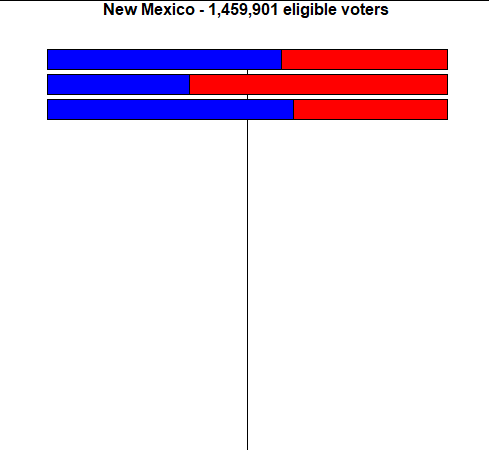
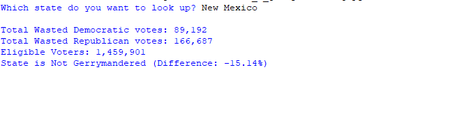
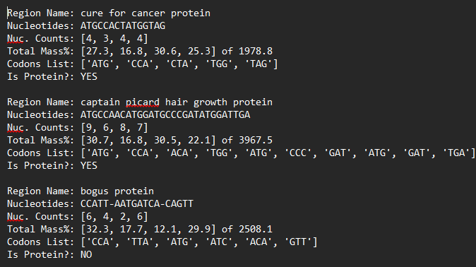
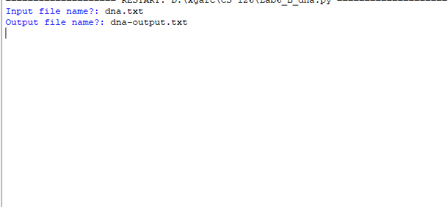

Hello! My name is Xavier Garcia and I am currently a Sophomore at the Northern Arizona University. I am passionate towards all that revolves around computers. I have experience in programming languages such as Python, HTML with more currently on the way. Over the summer I interned at Advanced Network Managment as a Network Engineer Intern, where I learned how to instal/configure switches and routers. I'm eager to continue taking the neccesary steps forward, to achieve my goals and become a succesful engineer in this space.
| Education | Experience |
|---|---|
|
|
| 
Gerrymanding Visualizer |

Gerrymandering Results |
| 
DNA Output File |

DNA User Prompt |
| Languages | Software | Other |
|---|---|---|
|
|
|
|